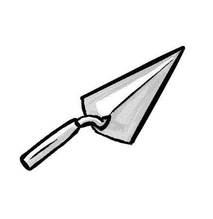
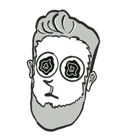

ABOUT

From Bricklayer to Developer
I’m meticulous and focused on user experience.
From as far as I can remember, I've always been building projects on my computer. Transitioning from bricklaying to programming after fifteen years feels unreal. I bring the precision of laying bricks and the curiosity of a lifelong learner into this journey.
HTML5
CSS3
JavaScript
React
Python
Responsive
Git
Agile